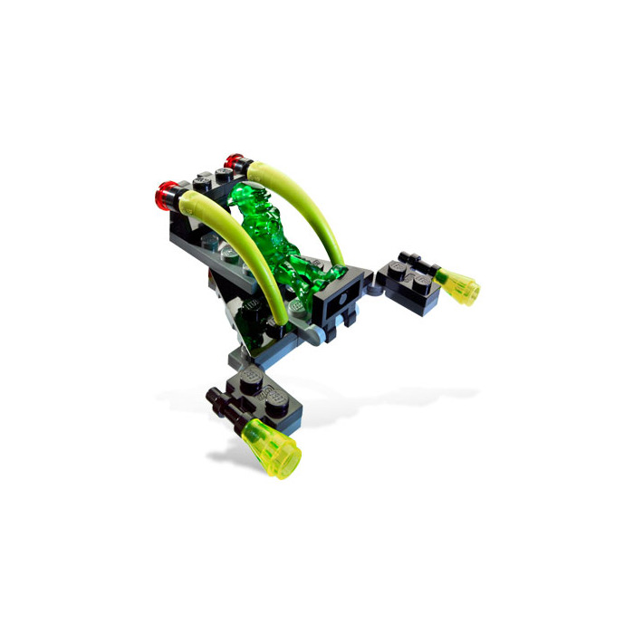

LEGO Space RTS · M8.5 · T083Одна ціль · одне рішення
Alien Jet · 5617
Фракція Aliens · Повітряний розвідник / перехоплювач
ДИРЕКТОР ПРИЙНЯВ · 25.09.2026T084 — НЕ РОЗПОЧАТО
Production Design Target
ЗІБРАНИЙ ВИГЛЯД
Офіційні інструкції LEGO 5617PDF інструкціїПоходження зображення
Зображення вище збережене без змін; офіційні інструкції підтверджують складання й зовнішні вузли.
Технічні деталі
Stable ID: unit.aliens.alien_jet
Відкрити Design Spec · Маніфест джерел
Target mode: SOURCE_LOCKED · Статус: пропозиція директора, не затверджено. Цільова перевірка: `design-package`.
T084 не авторизовано цим оглядом; рішення стосується лише візуального Production Design Target.